Cloud Build¶
Cloud build provides the following capabilities:
- Building .app and .ipa files for iOS* devices in the cloud from Android Studio* on Windows*.
- Run and debug iOS* apps built in the cloud on iOS* devices connected to Windows* host
Running iOS* apps on a simulator on Windows* hosts is not possible.
This tutorial covers information related to the Cloud build to get started:
- How to register and login to Multi-OS Engine cloud build
- How to create cloud build configuration and run the build
- Apple* P12 certificate and provisioning profile obtaining
- Known issues and troubleshooting steps
Requirements for Windows* hosts:
- Microsoft* Windows* 7 x64 edition or later
- Google* Android Studio* 1.2 or later
- Java* Development Kit (JDK) version 8
- Android* Platform SDK
- Apple* iTunes*
Creating build configuration in Android Studio¶
Go to “Run” => “Edit Configuration” to create cloud build configuration.
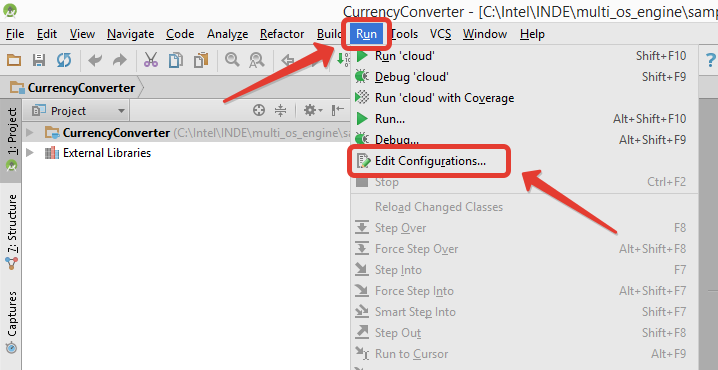Click “+” and choose “Intel MOE Cloud build”
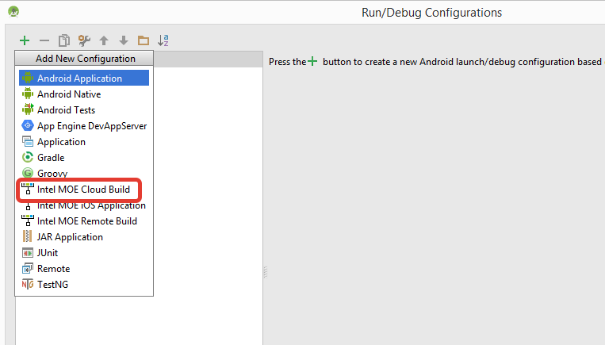Press “Register” button to sign up in the Multi-OS Engine cloud:
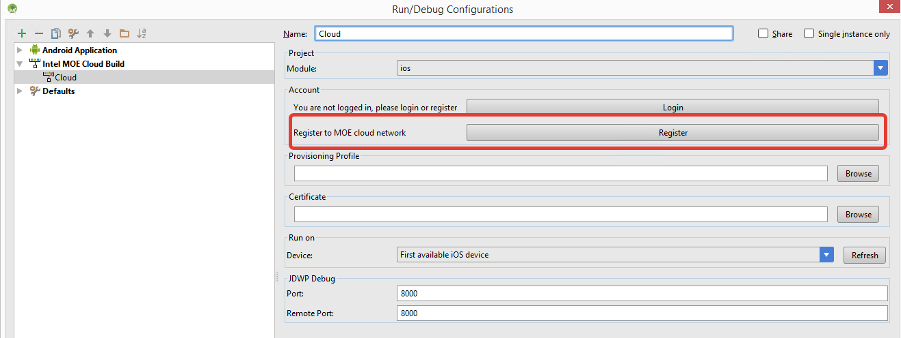Enter your name, email address, location, login and password in the opened Internet browser window:
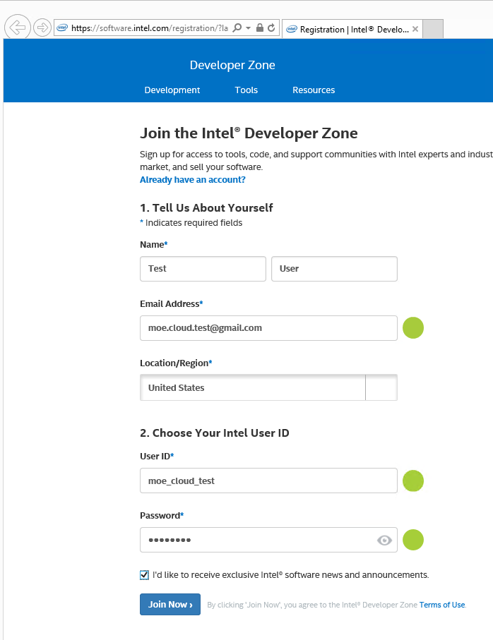Press “Join Now”. When registration is completed, close the browser window, go back to Android Studio* build configuration and press “Login” button:
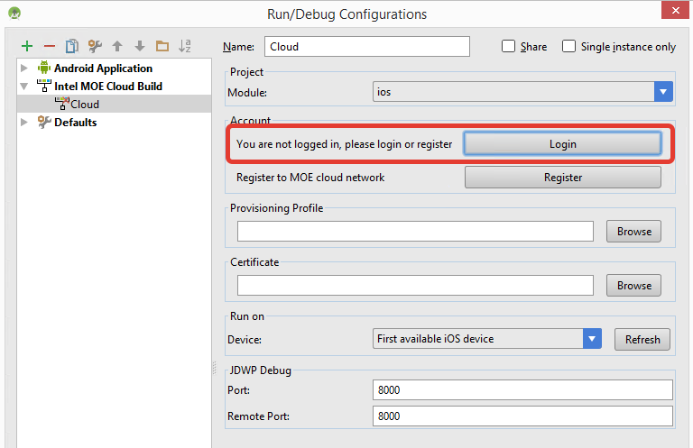Enter your login and password in opened window:
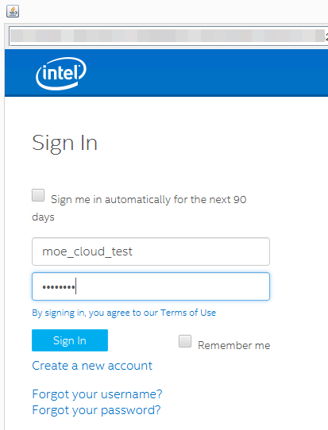Check a box to agree with license agreement and press Submit:
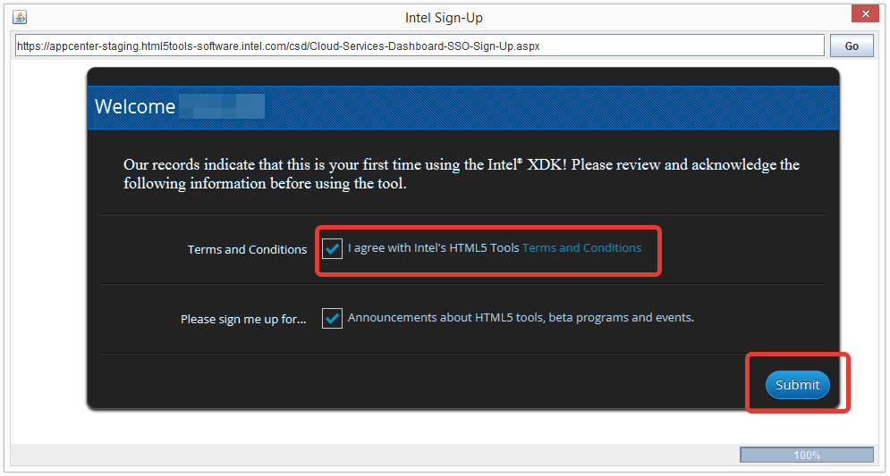Note: if you were asked to verify your email address, you can temporarily press “Skip” to finish the sign in process.
When you see “Thank you for using the Intel® XDK” page, close the browser window:
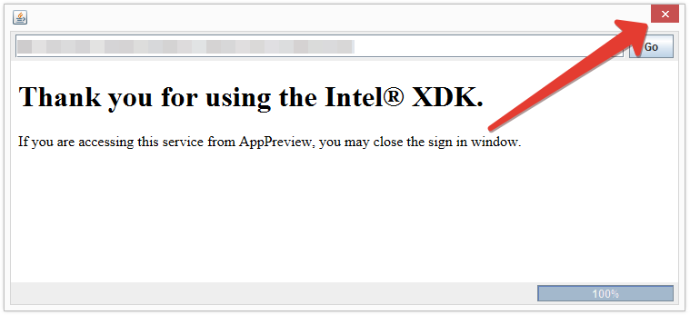Now you will be authorized in the Android Studio* plugin:
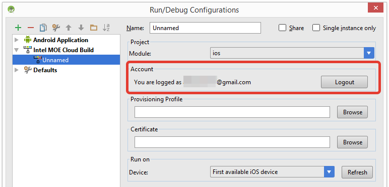The next step is to load your provisioning profile and Apple* P12 certificate to the build configuration
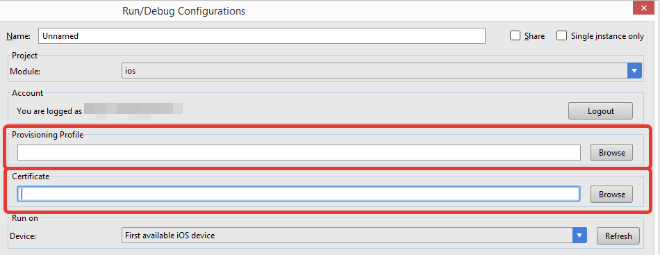Enter password for P12 certificate after providing a path to the certificate.
Please make sure that Info.plist in <project_root>/ios/Xcode/<project_name> contains a valid Bundle ID corresponding to the provisioning profile. For more information, please visit: About Bundle IDs
A few notes about the certificates. Apple developer certificate is needed in order to run the code on a physical iPhone and iPad. Apple Mac machine and membership in Apple Developer Program ($99/year) are needed to generate P12 certificate and to submit your apps to the AppStore. If you either don’t have Mac machine or don’t want to pay for Apple Developer Program, there are two options:
- It is possible to generate the certificate using “free” Apple developer account on Mac OS X with Xcode 7, but you will not be able to submit your application to AppStore using this certificate.
- If you have paid membership in Apple Developer Program, then you can generate the certificate and provisioning profile on your Windows machine, build an IPA file using Multi-OS Engine cloud build and then submit the IPA to AppStore using some 3rd party services.
Run and Debug iOS* app¶
Click “run” or “debug” icon to run or debug sample on device respectively
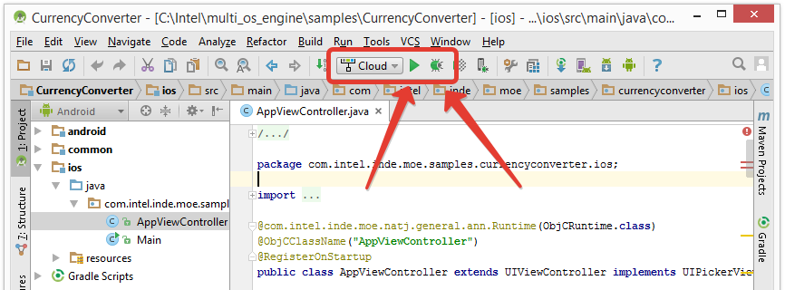To see the build progress, open “Intel Multi-OS Engine” tab:
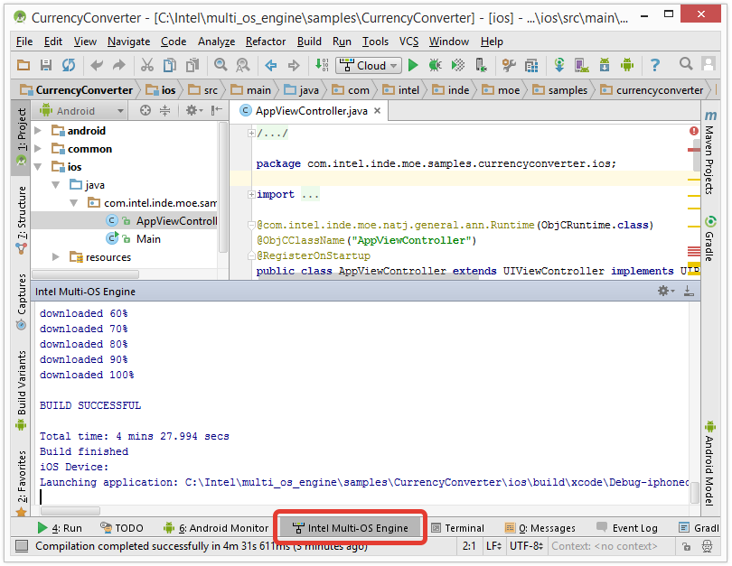All build logs will be placed in the “<project_root>/ios/build/logs” folder.
How to build IPA for application deploying¶
To build IPA file go to the “Build” tab and choose “Export IPA for Application” option

Choose cloud build configuration in the popped up window and click “OK” to start build
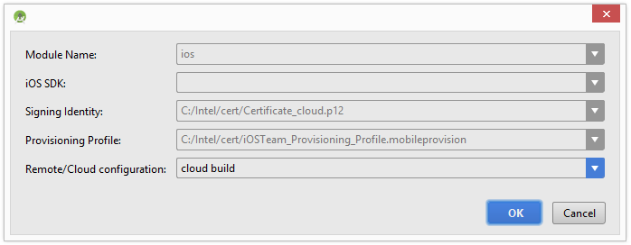After successful build the window below should appear. It informs where created IPA file is located and gives opportunity to open it in the explorer by clicking corresponding button.
Double click on the .IPA to open by in Apple iTunes*. Click “Install” and then “Sync” to install it to iOS device connected to the Windows machine:
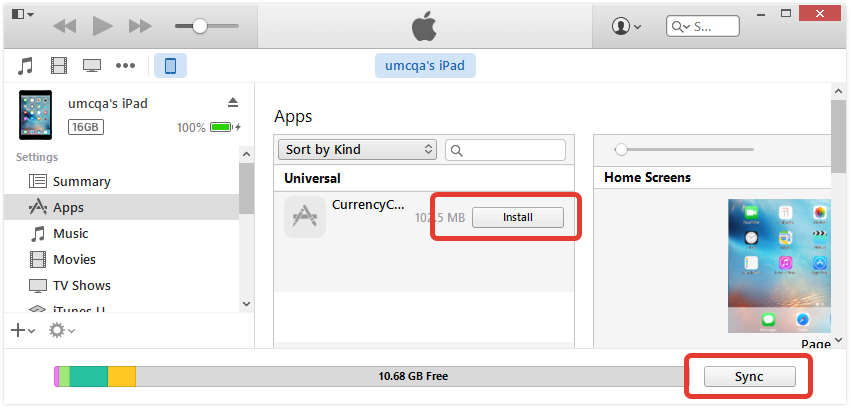Getting Apple developer certificate and provisioning profile on Mac OS X¶
Go to Mac OS X machine, open Xcode, open the Accounts preferences pane, and check whether your Apple ID is registered. If it’s not listed, click “+” button to add it.

Make sure that you have a valid signing identity and provisioning profiles. Choose your account in the accounts preferences pane and click on “View Details”.

To export P12 certificate, start the Apple Keychain Access* application by opening the Applications folder and choosing the Utilities option.

Select the Apple certificate to be exported, click File in your Apple menu and select Export Items from the drop-down menu.

In the Save As field, enter a name for the Export p12 file. Enter a password for your p12 file (1 character minimum). Click OK.

Copy the downloaded p12 file to your Windows* system so you can use it to configure MOE cloud build.
To find existing provisioning profile on your hard drive, go to Xcode -> Preferences -> Accounts -> View Details, right click on the provisioning profile with required Bundle ID and select “Show in Finder:

You can generate new Provisioning Profile on Apple* web site. Go to https://developer.apple.com, sign in to Member Center, and open “Certificates, Identifiers & Profiles” link:
After you sign into your Apple* Developer account using a web browser, select Certificates, Identifiers & Profiles. Click Provisioning Profiles, then select “Distribution”, click “+” button. Select your distribution type (“Ad Hoc” for testing or “App Store” for a final distribution/production build), click continue. Then select your App ID and click Continue. Then select your certificate, select the desired devices. Name, generate, and download the Provisioning Profile.
You can create multiple Ad Hoc provisioning profiles depending on the testing devices to be used. Typically, create one or more for ad hoc testing purposes. Later, create a production provisioning profile for the final Apple AppStore distribution.
Certificates generation using “free” Apple developer account¶
Prerequisites:
- Mac OS X machine with installed Xcode 7.x
- iOS device connected to the mac machine
Limitations of the free certificate:
- You will not be able to submit your applications to AppStore*
- You can’t manage your certificates and provisioning profiles using https://developer.apple.com site
Create a free Apple ID if you don’t have it.
Open Xcode 7, navigate to Xcode -> Preferences -> Accounts and press “+” button to add your Apple ID. Select your account and press the “View Details” button.
The next screen allows you to create the development certificate. To do this, press the Create button next to the iOS development text. Once this process has completed, press Done.

Now you can find the generated development certificate in “Keychain Access” program.

Now connect your iOS* device to the Mac OS X* machine. Create new project for iOS* using Xcode* project wizard (File -> New project). Enter the Product name, Organization Name and Organization Identifier sections, press Next and save your project. You should see the following screen:

Select your iOS* device from the target selection drop-down menu. Press the “Fix Issue” button to create the provisioning profile for your device. Press the “Play” icon to build the project and deploy the application to device to ensure that everything is set up correctly.
It’s possible that the first time you get message “process launch failed: security”. It indicate that provisioning profile was not approved by device. To fix it you should go Settings -> General -> Profiles and mark corresponding profile trusted. To save the development certificate as .p12 file, go to Keychain Access, select the certificate, open the arrow to also select the private key and export them together as a .p12 file. To find the provisioning profile, go to Xcode* -> Preferences -> Accounts -> View Details. right click on the provisioning profile with required Bundle ID and select “Show in Finder”.
Certificates generation on Windows machine¶
Note: It’s possible only of you have a paid membership in Apple Developer Program.
Download and install OpenSSL toolset for Windows to C:OpenSSL folder.
Generate a private key:
set OPENSSL_CONF=C:\OpenSSL-Win32\bin\openssl.cfg
C:\OpenSSL\bin\openssl genrsa -out mykey.key 2048
Generate Certificate Signing Request (CSR) file. Do not forget to change email address, your name and country:
openssl req -new -key mykey.key -out CertificateSigningRequest.certSigningRequest -subj "/emailAddress=cloud.user@gmail.com, CN=Cloud User, C=US"
Upload generated CSR file to Apple* site:
- Open https://developer.apple.com
- Go to Certificates menu, click “+” button
- Select “Add Store and Ad Hoc” or “iOS App Development” items, click Continue
- Click the Choose File button and locate your saved CRS file, click Generate
- Click the Download button to download .cer file
Generate P12 certificate using the private key and .cer certificate:
Convert the .cer file you receive from Apple* into a PEM certificate file. Run the following command from the OpenSSL bin directory:
openssl x509 -in developer_identity.cer -inform DER -out developer_identity.pem -outform PEM
Generate P12 file based on the key and the PEM version of the Apple developer certificate*:
openssl pkcs12 -export -inkey mykey.key -in developer_identity.pem -out dev.p12
Create Bundle ID:
- Go to https://developer.apple.com, select Identifiers -> App IDs
- Provide App ID description and corresponding bundle id, click Continue
- Click Submit
Generate provision profile:
- Go to https://developer.apple.com, select Provisioning Profiles on the left side and click Distribution
- Click the + button in the upper-right corner
- If this is a final distribution build, select App store*; otherwise, select Ad Hoc and click Continue
- Select your App ID
- Select one Certificate if you have multiple. Note: remember which one you are selecting. A certificate is required later to build your app correctly
- Type a profile name that will identify the profile in the Portal, click Generate
- Select all the devices to be in this profile for testing and running the app on device
- Click the Download button to download the file to your workstation.